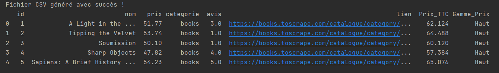

Ce projet est un outil complet de scraping web et d'analyse de données utilisant Python, BeautifulSoup, pandas, Matplotlib et MySQL. Il permet de récupérer, stocker, analyser et visualiser des données produits à partir de sites e-commerce : cas de Books to Scrape(Site de ventre de livres).
Accéder au code source du projet :
git clone https://github.com/Ross260/SPRINT_DATA_FINAL_PROJET.gitpip install -r requirements.txt
CREATE DATABASE ecommerce_scraping;
USE ecommerce_scraping;
CREATE TABLE produits (
id INT AUTO_INCREMENT PRIMARY KEY,
nom VARCHAR(255),
prix DECIMAL(10,2),
categorie VARCHAR(255),
avis VARCHAR(50),
lien TEXT
);
Dans le fichier config.py :
DB_CONFIG = {
"host": "localhost",
"user": "hostname",
"password": "your_password",
"database": "ecommerce_scraping"
}
python main.pyAprès exécution du script, un premier filtrage des données est appliqué avant le stockage en base de donnée
python nettoyage.pyAperçu des premières ligne du dataframe après exécution du script:
Après exécution du script, les données sont récupérer en base de données, néttoyées et dans le but de rendre les donnée pertinente pour l'analyse, des colonnes sont ajouter au dataframe et ensuite il y a un stockage en CSV
python visualisation.py